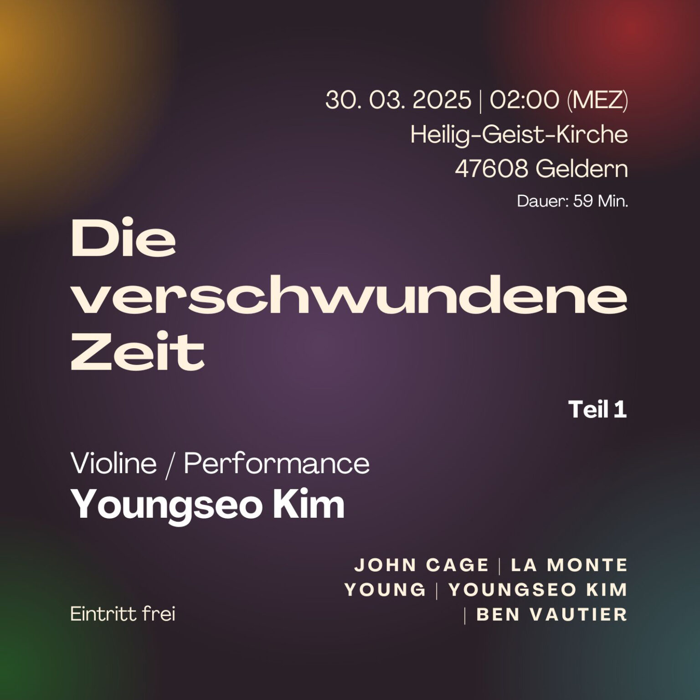

Die verschwundene Zeit
Program
- Ben Vautier – I will be back in Ten Minutes (1963)
- La Monte Young – Composition 1960 #6 (1960)
- Youngseo Kim – Close your eyes (2025)
- La Monte Young – Composition 1960 #13 (1960)

Is it still a concert if:
there is no audience?
there is no performer?
nothing is played?
it happens in a NON-EXISTENT TIME?
Ist es immer noch ein Konzert, wenn:
es kein Publikum gibt?
es keinen Performer gibt?
nichts gespielt wird?
es in einer NICHT EXISTIERENDEN ZEIT stattfindet?
Est-ce encore un concert si:
il n’y a pas de public?
il n’y a pas d’interprète?
rien n’est joué?
il se déroule dans un TEMPS INEXISTANT?
‘사라진 시간’
단지 ‘1년에 단 하루, 단 1시간 동안만 가능한’ 연주
만약:
관객이 없다면?
연주자가 없다면?
아무것도 연주되지 않는다면?
‘존재하지 않는 시간’에 열린다면?
이것은 여전히 연주인가? 에 관한 철학적 고찰.
In an hour that doesn’t exist,
a sound was heard
and became a performance that never happened.
But was it music?
If no one heard it — was it still a performance?
If nothing was performed — what was it, in the end?
Time moves on. But even its flow is defined only within the frameworks we created.
Within the time defined by human hands —
no art came to be.
And yet, beyond those human concepts of time —
the performance did exist.
In einer Stunde, die nicht existiert,
erklang ein Ton
und wurde zu einer Aufführung, die nie stattfand.
War es Musik?
Wenn niemand es hörte – war es dennoch eine Aufführung?
Wenn nichts aufgeführt wurde – was war es letztlich?
Die Zeit vergeht. Doch selbst ihr Fluss wird nur innerhalb menschlicher Rahmen definiert.
In der Zeit, die vom Menschen definiert wurde –
entstand keine Kunst.
Und doch, jenseits dieser menschlichen Zeitbegriffe –
existierte die Aufführung.
Dans une heure qui n’existe pas,
un son a résonné
et est devenu une performance qui n’a jamais eu lieu.
Était-ce de la musique ?
Si personne ne l’a entendue — était-ce encore une performance ?
Si rien n’a été joué — alors, qu’était-ce au fond ?
Le temps passe. Mais même son écoulement n’existe que dans les cadres que l’homme a créés.
Dans le temps défini par l’humain —
aucun art n’a pu exister.
Et pourtant, au-delà de ces concepts humains du temps —
la performance a bel et bien existé.
존재하지 않는 시간에 울려 퍼진 음은
존재하지 않는 연주가 된다.
그것은 음악이었을까?
만약, 아무도 듣지 못했다면 — 그것은 여전히 연주일까?
만약, 아무것도 연주되지 않았다면 — 결국 무엇인가?
시간은 흘러간다. 그러나 그 흐름조차, 인간이 만든 틀 안에서만 정의된다.
그 인간이 정의한 시간 속에서 —
어떤 예술도, 존재하지 못했다.
그러나 그 연주는, 인간의 개념 너머의 시간 속에 — 분명히, 존재했다.
1. October 2023
The idea started from a simple thought: What if a concert was held during the time when one hour is lost or gained due to Daylight Saving Time?
2. December 2024
Started considering directions for realization.
3. January 2025
Attempted to plan a concert in Vienna. Prepared funding application – abandoned due to paperwork. Expansion of concept: Deconstructing traditional concert customs and interaction.
4. February 2025
Location changed to Geldern, Germany. Refined format and program. Planning Part II: 『À la recherche du temps perdu』.
5. March 2025
Formulated philosophical questions: Is it still a concert without an audience or performer in a non-existent time?
6. March 30, 2025
Realization of the concert and filming.
1. 2023년 10월
섬머타임으로 인해 한 시간이 없어지거나 늘어나는 현상을 이용해 연주를 하면 어떨까? 라는 아이디어에서 출발.
2. 2024년 12월
실현을 위한 구체화 단계 진입.
3. 2025년 1월
오스트리아 빈에서의 기획 시도 및 중단. 플럭서스 운동 기반의 새로운 연주 포맷 구상 및 공연 관습 해체 시도.
4. 2025년 2월
장소를 독일 겔던으로 변경. 두 번째 파트 『잃어버린 시간을 찾아서』(À la recherche du temps perdu) 기획.
5. 2025년 3월
주요 철학적 질문 정리 및 시간 개념 정립.
6. 2025년 3월 30일
공연 실현 및 촬영.